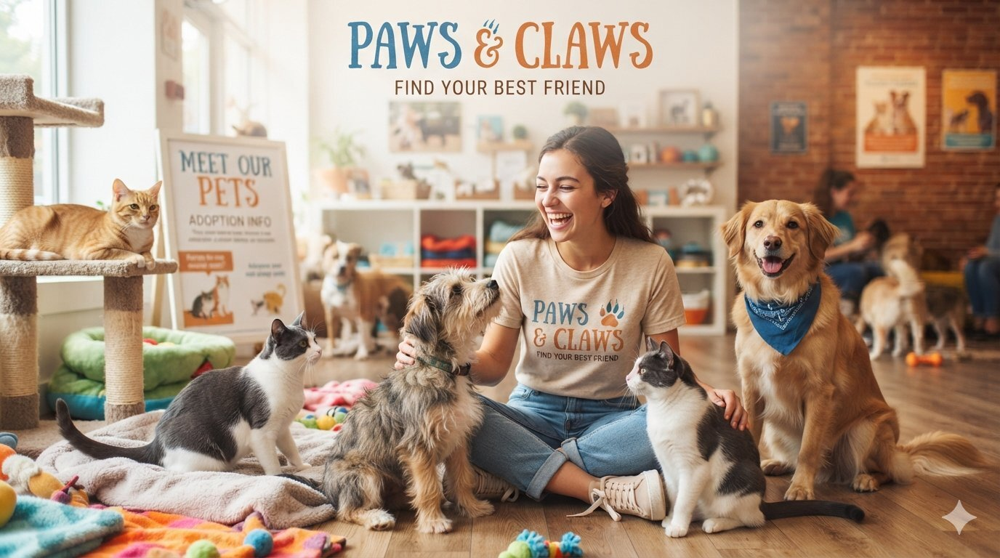

Open Your Heart, Change a Life
Adopting a pet brings unconditional love, endless joy, and a loyal companion into your home
while giving a deserving animal a second chance at happiness. Beyond the rewarding feeling
of saving a life, welcoming a rescue pet into your family is proven to lower stress,
increase physical activity, and boost your overall well-being. Rescue animals are often
already socialized or house-trained, making the transition seamless as they fill your life with
gratitude and affection.
How Adoption Works
|
Browse Pets
|
Submit Application
|
Meet & Adopt
|
Why Adopt from Paws & Claws
- Saves a Deserving Life: You provide a loving, second chance at a home for an animal in need
- Improves Your Health: Having a pet is proven to lower stress levels and keep you physically active.
- Saves You Money: Rescue pets are usually already vaccinated, microchipped, and house-trained.
 Home
Browse Pets
About Us
Home
Browse Pets
About Us